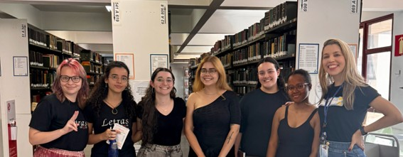
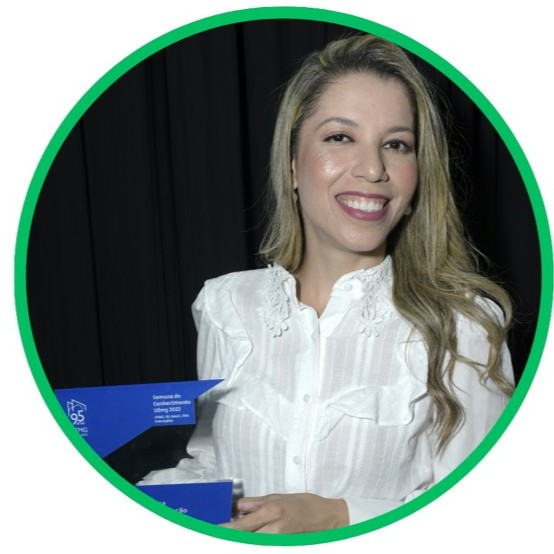

Quem somos
“A ilha desconhecida fez-se enfim ao mar, à procura de si mesma.”
Nossa missão
O projeto Línguas-Culturas promove o ensino de línguas estrangeiras por meio de ações extensionistas, pesquisa e formação docente, aproximando diferentes culturas da comunidade.

Coordenação
Fernanda Peçanha Carvalho
Coordenadora do projeto Línguas-Culturas
Doutora e mestra em Linguística Aplicada pela Universidade Federal de Minas Gerais, com estágio pós-doutoral pela Universidade Federal de Ouro Preto (2024). Licenciada em Letras, com habilitação em Língua Portuguesa e em Língua Espanhola pela Faculdade de Letras da UFMG. Formação em Magistério, nível médio técnico. Atualmente é professora de Língua Espanhola do Colégio Técnico da UFMG. Tem experiência na área de Letras, com ênfase em Línguas Estrangeiras Modernas, atuando, principalmente, nos seguintes temas: internacionalização do conhecimento, análise do discurso franco-brasileira em interface com a psicanálise, política linguística, letramento digital, multiletramentos e ensino remoto emergencial. Coordena o projeto de extensão Línguas-Culturas no COLTEC-UFMG (SIEX 404268), no qual atua com o ensino de línguas estrangeiras via ações extensionistas inovadoras. Ademais, desenvolve a pesquisa intitulada Experiências do ensinar e do aprender espanhol, francês, grego, italiano, mandarim e japonês em tempos inéditos e pós-pandêmicos no COLTEC-UFMG: discursividades docentes e discentes. A pesquisadora realiza a formação docente inicial através de estágios supervisionados obrigatórios, bem como formação continuada em parceria entre o Ensino Superior e a Educação Básica e Profissional da UFMG, através do evento formativo Querem os estudantes da escola pública aprender espanhol, francês, grego, italiano, japonês e mandarim?
Currículo Lattes
Equipe
Quem faz acontecer
Uma equipe multidisciplinar formada por docentes, estudantes e colaboradores que constroem coletivamente as ações do projeto.